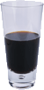

Специальные предложения напитков

«Лимонный бриз»
Максимально полезный напиток. Содержит экстракты трав, минералы и витамины,
а кусочек лимона в форме завитка придает напитку чудесный мягкий цитрусовый
аромат. «Лимонный бриз» зарядит вас энергией на весь день.

Чай «Льдинка»
Это не традиционный чай. В нем смешаны матэ и чайные специи,
а также добавлен шоколадный сироп высшего качества, что
придает напитку удивительный вкус ледяного кофе.

«Подзарядка для мозга»
Проблемы с памятью? Отведайте наш напиток «Подзарядка для
мозга», сделанный из черного чая и небольшого количества
эспрессо. Ваш мозг будет вам благодарен за подзарядку.
Заходите к нам каждый вечер и пробуйте эти
и другие замечательные
напитки.
Добро пожаловать в новую усовершенствованую гостевую Head First
Заходите к нам каждый вечер, чтобы попробовать
освежающие нвпитки, поболтать и, возможно,
станцевать разок-другой
Всегда обеспечен беспроводной доступ
(захватите с собой свой ноутбук)
Наша гарантия: мы обязуемся оставлять у вас, наших гостей, только
самые лучшие впечатления после каждого посещения гостевой. Не-
важно, зашли вы к нам просто проверить свою электронную почту
за чашечкой чая или заказали грандиозный обед, вы увидите, что наш
обслуживающий персонал обращает внимание на каждую мелочь. Если вы
чем-то недовольны, отведайте наш чудо-напиток из голубики.
Указатели
Вы найдете нас в самом центре Webville.
Если вам нужна помощь, чтобы найти нас, используйте
нашиуказатели.
Присоединяйтесь к нам!
Какая музыка играет в гостевой
- Buddha Bar,Claude Challe
- When It Falls,Zero 7
- Earth 7,L.T.J. Bukem
- Le Roi Est Mort,Vive Le Roi!, Enigma
- Music for Airports,Brian Eno